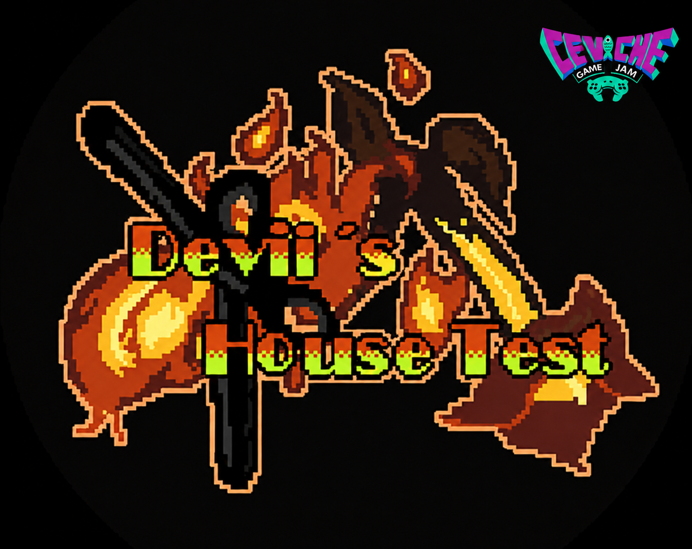
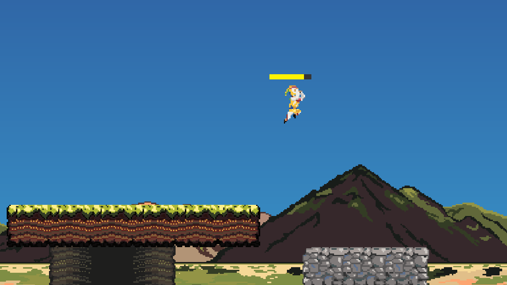
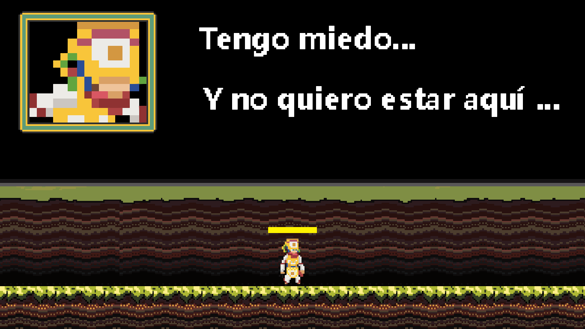
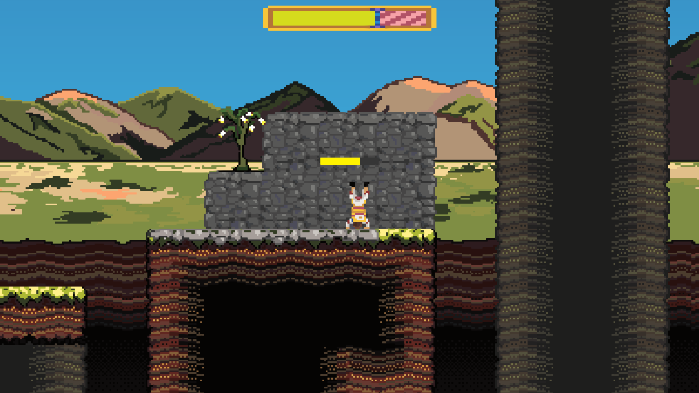
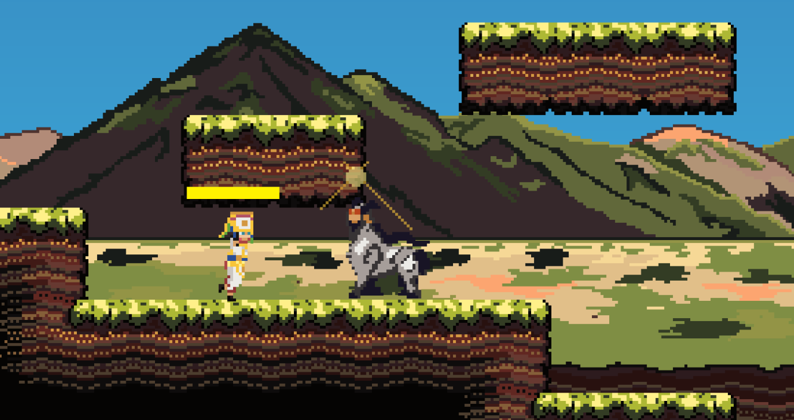

Ceviche Game Jam 2020 · Solo Project · 4 días
Devil's House Test
Un plataformas 2D creado individualmente en cuatro días alrededor del tema “Tradiciones”, reinterpretando la iniciación de un danzante de tijeras como una prueba fantástica a través de la montaña.

Gameplay
Cuatro días convertidos en juego
Esta demo breve muestra el movimiento, el plataformeo, parte de la estética pixel art y el tono general de la entrada.
Galería
Pixel art, plataformas y folclore




Concepto
Una prueba de iniciación llevada a la fantasía
La premisa surgió del tema de la jam: tradiciones. Tomé la figura del danzante de tijeras y la transformé en una pequeña aventura fantástica: el protagonista debe ascender la montaña y superar una prueba que culmina frente a la Jarjacha para ganarse el derecho a convertirse en danzante.
No buscaba una representación documental de la tradición, sino utilizarla como punto de partida para construir una identidad visual y mecánica propia dentro del poco tiempo disponible.
Solo Project
Qué hice durante la jam
Desarrollé el proyecto de manera individual durante los cuatro días de la jam. Me encargué de la programación, diseño de niveles, pixel art, animaciones, implementación de mecánicas y composición musical.
Algunos efectos de sonido y referencias externas fueron utilizados durante el desarrollo y están acreditados en la publicación original del proyecto.
Mecánicas
Movimiento, ritmo y una idea que quedó a medio explorar
El personaje puede caminar, correr y saltar. También implementé un ataque lanzándose al suelo, aunque la restricción de tiempo impidió darle un uso significativo dentro del diseño final.
La mecánica más ligada al tema era el zapateo rítmico: al mantener la posición y pulsar el botón correspondiente, el jugador puede acompañar el ritmo con los pies. La idea buscaba unir directamente la identidad del danzante con la interacción, aunque no llegó a desarrollarse tanto como había previsto.
Audio
Una misma pieza que cambia con el recorrido
La música fue compuesta específicamente para el juego. Cada sala utiliza variaciones o cambios en la pieza con la intención de que el recorrido se perciba como una composición continua, aunque musicalmente sea un experimento realizado sin formación formal en composición.
Limitaciones
La build conserva su error de Game Jam
El proyecto fue entregado dentro del plazo, pero la versión publicada contiene un bug fatal al entrar en contacto con el jefe final: la colisión deriva hacia un evento que no llegó a implementarse y la aplicación termina cerrándose.
El error apareció durante los últimos minutos de desarrollo. En lugar de reconstruir el proyecto años después, prefiero mantener esta versión como registro de lo que logré construir individualmente en cuatro días en 2020. El recorrido anterior al enfrentamiento final sigue siendo jugable.
Retrospectiva
Por qué todavía forma parte de mi portfolio
Técnicamente ya no representa mi nivel actual, pero sí muestra una parte importante de mi trayectoria: antes de dedicarme profesionalmente al software empresarial ya experimentaba con proyectos donde programación, diseño, narrativa, arte y audio tenían que convivir dentro de una misma experiencia.
También fue una lección bastante directa sobre alcance: invertí demasiado tiempo en producir arte y asumí que las mecánicas sencillas podrían cerrarse rápidamente al final. El resultado funcionó lo suficiente para la presentación, pero dejó poco margen para probar correctamente el tramo final.
Build original
Ver la entrada de Game Jam
La versión publicada en 2020 continúa disponible en itch.io junto con sus créditos y archivos originales.